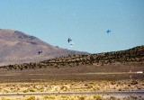
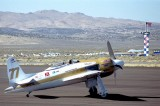
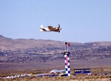
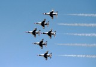
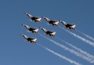
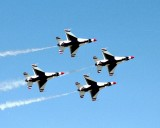
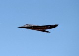

RenoAirrace2003
久しぶりにエアレースに行った。

エアレースというのは簡単に言うと飛行機のレース。墜落することもあって結構危険。選手は退役軍人が多いようだ。

お気に入りのRareBear(グラマンF8ベアキャットベース)。2000年に行った時にはエンジンが壊れて飛べない状態だった。ほとんどムスタングワンメーク状態になっているアンリミテッドクラスにおいては、特に頑張って欲しい一機。

とてもおんぼろだったとは思えない雄姿。しかも速い。

サンダーバードの演技飛行。翌日練習中に墜落したらしい。



F-117も飛んできた。
この飛行機が飛ぶところが見れるなんて思っても見なかったのでかんどうー！
03/09/13 Reno, NV